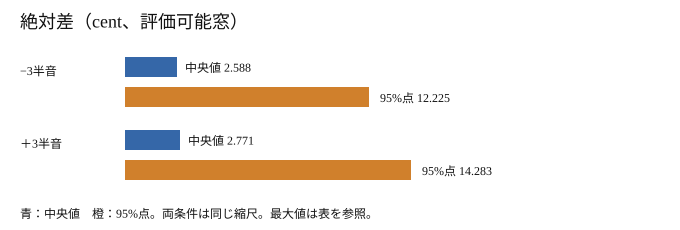

Apronの音高±3半音は、基準出力の推定音高にどれだけ追従したか
現在の作業ベース Apron（標準HMPP）の0半音出力を基準に、同じ録音の±3半音出力を比べました。評価可能窓の絶対差の中央値は−3半音2.588 cent、＋3半音2.771 centです。ただし最大はそれぞれ約1,932・1,929 cent。小さい中央値だけで十分な追従と結論できません。方式の採用や音質順位は判断しません。
比較できるのは同じ Apron の0半音出力と編集出力の相対差です。既公開のApron品質評価は経緯を示す別研究で、今回の新しい品質値ではありません。原音の真のF0や絶対正解率は測っていません。
評価できた窓は対象窓の約89%と94%
英語40話者・120録音を120解析・360合成の保存結果を使いました。入力長から決めた予定格子は各条件60,741窓で、端点や失敗を事後に外していません。基準F0が正で、倍率後も名目65–700 Hzに入る対象は−3半音19,588窓、＋3半音19,703窓。そのうち編集F0も正だったのは17,396窓（88.81%）と18,591窓（94.36%）です。全予定窓を分母にした約29%・31%を操作失敗率とは呼べません。
| 区分 | −3半音 | ＋3半音 |
|---|---|---|
| 基準窓なし | 0 | 0 |
| 編集窓なし | 0 | 0 |
| 両方0 | 40,395 | 39,039 |
| 基準0・編集正 | 636 | 1,992 |
| 倍率後が範囲外 | 122 | 7 |
| 範囲内で編集0 | 2,192 | 1,112 |
| 評価可能 | 17,396 | 18,591 |
基準0は両条件とも41,031窓、基準正は19,710窓です。0という推定値から真の無声とYIN推定不成立は区別できません。倍率後の範囲外は122/7窓、範囲内でも編集0は2,192/1,112窓でした。
中央の差は小さいが、端の大きな差が残る
| 操作 | 評価可能/予定 | 中央値 | 95%点 | 最大 |
|---|---|---|---|---|
| −3半音 | 17,396/60,741 | 2.588 | 12.225 | 1932.103 |
| ＋3半音 | 18,591/60,741 | 2.771 | 14.283 | 1928.904 |

録音ごとの符号付き中央値をさらに話者で等重みにした中央値は−3半音-0.089 cent、＋3半音-0.322 cent。上表の窓重みの絶対差とは別の量です。両条件とも120録音に評価可能窓があり、40話者それぞれの3録音も非空でした。
境界近傍も主集計に含めた
境界は0半音出力のYIN推定が正と0を行き来した時点の前後40 msで定めました。生体の有声・無声境界ではありません。境界近傍の評価可能窓は−3半音9,718、＋3半音10,845。最大誤差は境界以外にも残ります。原因を合成器か測定器のどちらかに断定しません。
保存F0の比較手順と再確認の範囲
元の測定日は2026年10月23日（UTC）、完了時刻は受け渡し資料に残っていません。公開用の算術集計は2026年10月23日03:10 UTCに作成しました。両者は別の作業です。
24 kHz出力を2 kHz・6次Butterworthで前後フィルタし、even paddingを使った保存YIN推定値を参照しました。YINは1,920標本の完全窓、240標本の間隔、名目65–700 Hz、閾値0.15、RMS閾値1e−5。0半音の推定F0に2半音/12を掛け、同じ開始標本の編集F0との差を1200 log2(編集F0/目標F0) centで求めています。名目範囲を少し超えた推定値は切り詰めていません。各出力に予定格子より1窓多い末尾窓がありますが、主分母には入れていません。
今回の独立算術照合では保存F0から7区分・cent・境界を再計算し、240録音条件、35,987の有限cent、80話者条件、2全体集計を照合しました。非ゼロ差は0件で、許容差は使っていません。新しいYIN推定や再合成はしていません。録音別の公開用集計と来歴・照合件数を残します。
固定2録音の先頭5秒だけを聴く
下の6件は保存済みApron波形の先頭5秒をPCM16に変換したものです。音量正規化やclipはなく、この短例に新しい音質点数はありません。出典と変換式は帰属、元・公開SHAや値域は音声記録を参照してください。
次に必要な根拠
大きな差が出た窓について、独立した真F0と測定器の校正を含む事前計画を作る必要があります。このレポートだけでは音質・制御性の総合順位、統計的有意差、方式採用を決められません。品質研究ではないため自動MOSの再採点もしていません。